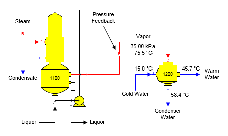
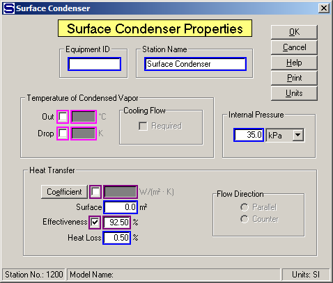
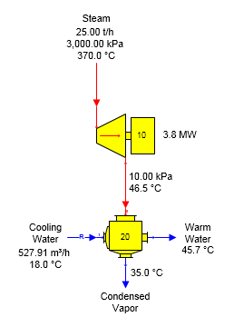
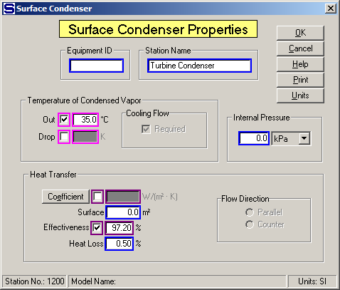

The figure below shows a surface condenser condensing vapor from an evaporator station. Vapor pressure for the evaporator is determined from the internal pressure of the surface condenser using pressure feedback.

Data for the surface condenser is given below on the Surface Condenser Properties dialog. Effectiveness is used to control the transfer of heat from the vapor to the cold water flowing into the condenser. The Internal Pressure value entered (i.e., 35.0 kPa) controls the pressure of the vapor leaving the evaporator station. The cold water flow into the condenser is a known quantity in this case; that is, it is not calculated by Sugars because a temperature was not entered for the condensed vapor out which would make the cold water flow in a required flow.

A surface condenser for condensing vapor from a condensing turbo alternator is shown in the figure below.

Cooling water flow into the condenser is a required flow and Sugars calculated the quantity because a temperature value was entered for the condensed vapor out (see the screen below).
